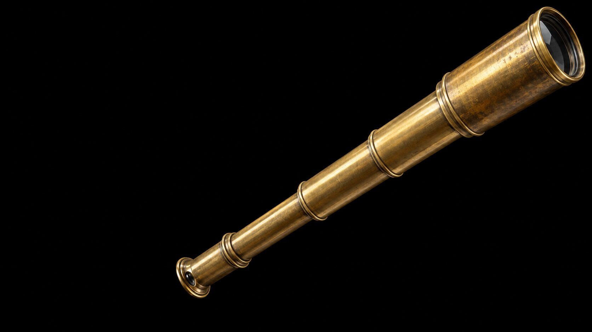

See what really ran
Spyglass is a CLI that verifies a coding agent's change with a real browser, HTTP, PostgreSQL and your own checks, and keeps the evidence after cleanup.
Start the quickstartLook closer
An agent says it is done. Under the claim is what the run recorded.
Done. All checks pass and it works.
$ spyglass check deliberate-failure --run terminal-trial
CHECK_FAILED: Check deliberate-failure failed: one or more assertions failed; the structured result reports failure.
Next: Inspect the retained attempt and artifacts, correct the cause, then rerun the check.
$ spyglass status --run terminal-trial
"completedChecks": [
{ "name": "deliberate-failure", "step": "8cbb29c2-d61", "status": "failed" },
{ "name": "health", "step": "b97266d0-842", "status": "passed" }
]
Both attempts stay in
.spyglass/runs/terminal-trial/spyglass/log.jsonl. The
failed one is not erased by the pass.
Real tools, kept proof
Each verification step becomes a recorded fact with its source identity, its artifacts and their checksums. No mocks.
- 7 surfaces
- Checks, commands, browser, HTTP, PostgreSQL, Compose and imported evidence.
- 4 exit codes
- Success, failed verification, bad input, environment.
- 91.7 ms
- Median time a browser command adds. The budget is 150 ms.
- 0 prompts
- Versioned JSON with
--json. Built for agents.
Check it yourself
This is a real screenshot that
spyglass ui proof home kept in the demo run
terminal-trial. Your browser hashes the file now and
compares it with the checksum in the run log. Change one byte and
the report refuses it.

- artifact
- 5006265f-e3c-1-proof-home.png
- step
- ui proof home
- recorded sha256
-
d2af3e3fcfcdfce5361e46296d767c221463bee746126fb2220172ad1f597785 - this browser
- Computed when scripts run.
The run log recorded this checksum when the browser took the screenshot.
One run, start to finish
-
Start a run on the source you have
uprecords the commit and the working-tree hash. Evidence from changed source cannot prove a claim about this source.spyglass up --run terminal-trial --plan verification-plan.json -
Drive real tools
Run checks, the browser, HTTP and database reads. A failed attempt stays in the record next to the pass.
spyglass check deliberate-failure --run terminal-trial spyglass check health --run terminal-trial spyglass status --run terminal-trial -
Record, clean up, report
Name the steps that prove each claim. The report stays incomplete until the proof exists and cleanup is done.
spyglass result --run terminal-trial --file .spyglass/runs/terminal-trial/spyglass/result.json spyglass down --run terminal-trial spyglass report --run terminal-trial

{
"id": "terminal-trial",
"state": "ready",
"source": {
"commit": "8e85659b7715d6de5a321b527c7e3a3fbcd4804d",
"hash": "c6328e4926046754f26a07c59d588f1bfec278491eb974f637f47bf912819b09"
},
"pendingClaims": ["health-ready"],
"result": ".spyglass/runs/terminal-trial/spyglass/result.json",
"next": "spyglass result --file .spyglass/runs/terminal-trial/spyglass/result.json --run terminal-trial"
}CHECK_FAILED: Check deliberate-failure failed: one or more assertions failed; the structured result reports failure.
Next: Inspect the retained attempt and artifacts, correct the cause, then rerun the check.
"completedChecks": [
{ "name": "deliberate-failure", "step": "8cbb29c2-d61", "status": "failed" },
{ "name": "health", "step": "b97266d0-842", "status": "passed" }
]- health-ready
- passed
- Observed
- GET /health returned HTTP 200 with status ok.
- Steps
- b97266d0-842
- Evidence
- b97266d0-842-1-health-output.txt
- source identity: Current source matches the baseline recorded at up.
- artifact integrity: 9 of 9 recorded artifacts match their checksums.
- cleanup: Spyglass cleanup: true; external owner cleanup: true.
Surfaces

The evidence stays
Screenshots, responses, query rows and logs go to a Git-ignored
evidence folder with checksums. spyglass down stops
what the run started. It does not remove the evidence, so another
agent or person can read the run later.
The report decides
Change the run. Each state shows what
spyglass report or spyglass result
printed for the quickstart demo in that state. Only one state
passes.
spyglass report --run terminal-trial
passed
exit 0
Claim health-ready
- Outcome
- passed
- Observed
- GET /health returned HTTP 200 with status ok.
- Steps
- e596a812-f93
- Evidence
- e596a812-f93-1-health-output.txt
Environment
- source identity: Current source matches the baseline recorded at up.
- artifact integrity: 9 of 9 recorded artifacts match their checksums.
- cleanup: Spyglass cleanup: true; external owner cleanup: true.
Failures it refuses to pass
| Area | Failure | What Spyglass does | Code |
|---|---|---|---|
| Source | Source changes after the run starts. | Later evidence cannot prove a claim about the original source. | STALE_SOURCE |
| Check | A check exits zero but reports a failed assertion. | The check fails and keeps the result, assertions and artifacts. | CHECK_FAILED |
| Claim | A required claim has no completed step. | The claim cannot pass. The report stays incomplete. | CLAIM_INCOMPLETE |
| Claim | A side effect has no independent read after it completes. | The claim cannot pass. An HTTP 202 is not a read. | INDEPENDENT_READ_MISSING |
| Browser | An action targets an origin outside the allowlist. | The action fails and names the policy. | BROWSER_ORIGIN_BLOCKED |
| Browser | A screenshot exists but nobody inspected it. | The visual claim stays incomplete. | VISUAL_INSPECTION_MISSING |
| HTTP | A request returns an unexpected status. | The expected-status check fails and keeps the response. | API_EXPECTATION_FAILED |
| Database | A query tries to write data. | A write statement is not sent. The read-only transaction blocks the rest. | DATABASE_READ_ONLY |
| Database | A query returns a different row count than expected. | The command fails and keeps the observed count. | DATABASE_ROW_COUNT |
| Run | Two operators change one run at once. | One command owns the lock. The other fails with a recovery step. | RUN_BUSY |
| Report | Cleanup did not happen. | The report is written, but the run is incomplete. | CLEANUP_PENDING |

Hand over the log
The run outlives the chat. A second agent or a reviewer opens a new terminal, reads the state and continues, or reads the report without a live app.
spyglass status --run terminal-trial
spyglass report --run terminal-trial --json